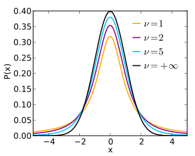
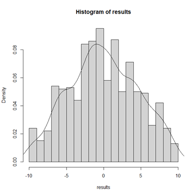
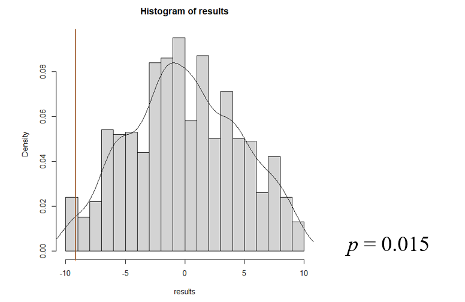

Lecture 13
非参检验
Hu Chuan-Peng
2023-12-05
本次课内容
符号检验
符号秩次检验
秩和检验
中位数检验
置换检验
回顾
| EFA | PCA | Clusters | |
| 原理 | 变量是因子的线性组合 | 主成分是变量的线性组合 | 相似变量归为一类 |
| 应用 | Reflective model | Formative model | 分类 |
| 新变量 | 独立 / 相关 | 独立 | / |
| 数据预处理 | / | 标准化 | / |
非参数检验
- 当总体分布未知或已知总体分布与检验要求的条件不符，数据转换也不能使其满足参数检验条件时，检验的是数据的分布，而不是总体的参数，不受总体参数的影响，这种方法称为非参数检验（nonparametric test）。
适用范围
顺序变量，等级变量（计数数据）
偏态资料
分布形态未知
各组数据同质性差
资料的初步分析
Part 1
符号检验(Sign Test)
- 比较两个相关（配对）样本的差异，数据来自顺序量表，它将中位数作为集中趋势的量度，两样本每对数据之差用正，负号表示，做单样本的二项分布检验判断正负号数是否存在显著性差异。利用正，负号的数目对某种假设做出判定的非参数检验方法。
\(P = Pr(X > Y)\)
\(H0: p = 0.50\)，即对每对数据\((x_i, y_i), p(x_i > y_i) = p(y_i > x_i) = 0.50\)
W是样本中\(y_i − x_i > 0\)的数量，假设\(H_0\)为真, 则\(W \sim B (n, 0.5)\)
示例
- 某研究者测定噪声刺激前后15名成人被试的心率变化，问：噪声对心率有无显著影响？
| 1 | 2 | 3 | 4 | 5 | 6 | 7 | 8 | 9 | 10 | 11 | 12 | 13 | 14 | 15 | |
|---|---|---|---|---|---|---|---|---|---|---|---|---|---|---|---|
| 刺激前 | 61 | 70 | 68 | 73 | 85 | 81 | 65 | 62 | 72 | 84 | 76 | 60 | 80 | 79 | 71 |
| 刺激后 | 75 | 79 | 85 | 77 | 84 | 87 | 88 | 76 | 74 | 81 | 85 | 78 | 88 | 80 | 84 |
| 差值 | -14 | -9 | -17 | -4 | 1 | -6 | -23 | -14 | -2 | 3 | -9 | -18 | -8 | -1 | -13 |
| 符号 | - | - | - | - | + | - | - | - | - | + | - | - | - | - | - |
- 提出假设
\(H_0\):噪声刺激前后被试的心率差值 \(d\) 总体的中位数 \(= 0\)
\(H_1\):噪声刺激前后被试的心率差值 \(d\) 总体的中位数 \(\ne 0\)
- 根据虚无假设\(H_0\)所提供的前提条件，选择合适的统计模型
- 样本量 \(n = 15\) 的配对样本。
- 规定显著性水平\(\alpha\)，\(\alpha\)确定后，否定域也随之被确定了
- 指定小概率的最大限为0.05。
- 计算检验统计量的值
- 计算差值并赋以符号，\(d > 0\)，记为\(“+”\)，\(d < 0\)，记为\(“-”\)，\(d = 0\)记为”0”，统计各符号个数，记为\(n_+\)，\(n_−\)，\(n_0\)，\(N = n_+ + n_−\)，检验的统计量为k，\(k = min(n_+, n_-)\)
- 计算检验统计量的值
- \(n_+ = 2\)，\(n_− = 13\)，\(N = n_+ + n_− = 15\)，检验的统计量为k，\(k = min(n_+, n_-) = 2\)
- 做出决策。根据显著性水平\(\alpha\)和检验统计量的分布，查相应的统计表，确定接受域和否定域的临界值，用计算出的统计量值与临界值做比较，从而做出拒绝或不拒绝虚无假设的决策。
\(N = 15, k_{0.05(2)} = 2, p < 0.05\)
拒绝虚无假设，噪声刺激对心率的影响达到了0.05的显著性水平。
Part 2
符号秩次检验(Signed Rank Test)
符号秩次检验（signed rank test，Wilcoxon test）：经过改进的符号检验，多用于配对样本检验，适用条件与符号检验一致，除了比较差值符号，还比较各对差值大小的秩次高低，剔除\(d = 0\)的该对数据，先按差值的绝对值大小排秩次，再将正负号标在秩次前，比较正秩和负秩的秩次和。
- 某研究者测定噪声刺激前后15名成人被试的心率变化，问：噪声对心率有无显著影响？
| 1 | 2 | 3 | 4 | 5 | 6 | 7 | 8 | 9 | 10 | 11 | 12 | 13 | 14 | 15 | |
|---|---|---|---|---|---|---|---|---|---|---|---|---|---|---|---|
| 刺激前 | 61 | 70 | 68 | 73 | 85 | 81 | 65 | 62 | 72 | 84 | 76 | 60 | 80 | 79 | 71 |
| 刺激后 | 75 | 79 | 85 | 77 | 84 | 87 | 88 | 76 | 74 | 81 | 85 | 78 | 88 | 80 | 84 |
| 差值 | -14 | -9 | -17 | -4 | 1 | -6 | -23 | -14 | -2 | 3 | -9 | -18 | -8 | -1 | -13 |
| 秩次 | 4 | 7 | 3 | 11 | 14 | 10 | 1 | 4 | 13 | 12 | 7 | 2 | 9 | 14 | 6 |
| 符号 | - | - | - | - | + | - | - | - | - | + | - | - | - | - | - |
- 提出假设
\(H_0:\)噪声刺激前后被试的心率差值 \(d\) 总体的中位数 \(= 0\)
\(H_1:\)噪声刺激前后被试的心率差值 \(d\) 总体的中位数 \(\ne 0\)
- 根据虚无假设\(H_0\)所提供的前提条件，选择合适的统计模型
- 样本量 \(n = 15\) 的配对样本。
- 规定显著性水平\(\alpha\)，\(\alpha\)确定后，否定域也随之被确定了
- 指定小概率的最大限为0.05。
- 计算检验统计量的值
编秩次，定符号;
确定正负秩次和\(T_+, T_-\)
计算T值，取较小样本量的各数据的秩次之和\(T = min(T_+, T_-)\)
- 计算检验统计量的值
- \(n_+ = 2\)，\(n_− = 13\)，\(n_0\), \(N = n_+ + n_− = 15\)，检验的统计量为k，\(k = min(n_+, n_-) = 2\)
- 做出决策。根据显著性水平\(\alpha\)和检验统计量的分布，查相应的统计表，确定接受域和否定域的临界值，用计算出的统计量值与临界值做比较，从而做出拒绝或不拒绝虚无假设的决策。
\(T < T_{0.05(15)}, p < 0.05\)
拒绝虚无假设，噪声刺激对心率有显著影响
示例
Part 3
秩和检验(Rank Sum Test)
秩和检验/曼-惠特尼U检验(Mann-Whitney-Wilcoxon rank sum test):比较两个独立样本的差异，如果两个样本来自同一总体，两个样本的观察值的位次应该分布均匀。将两个样本所有观察值进行排序，各样本中所有观察值对应的秩的总和称为秩和，用T表示，两个样本观察值没有显著差异，T的大小就会接近。
某学校两个班采用不同教学方法进行教学，问：两种教学方法是否存在显著差异？
抽测11名学生的结果：
甲班成绩：76，77，79，81，88
乙班学生成绩：78，82，85，86，89，91
- 提出假设
\(H_0:\)两种教学方法的效果不存在显著差异，总体分布位置相同
\(H_1:\)两种教学方法的效果存在显著差异，总体分布位置不相同
- 根据虚无假设\(H_0\)所提供的前提条件，选择合适的统计模型
- 两样本量不一致的独立样本。
- 规定显著性水平\(\alpha\)，\(\alpha\)确定后，否定域也随之被确定了
- 指定小概率的最大限为0.05。
- 计算检验统计量的值
混合观察值，编秩次，
计算秩和，
取较小样本量的各数据的秩次之和\(T = min(T_1, T_2)\)
某学校两个班采用不同教学方法进行教学，问：两种教学方法是否存在显著差异？
| 1 | 2 | 3 | 4 | 5 | 6 | 7 | 8 | 9 | 10 | 11 | |
|---|---|---|---|---|---|---|---|---|---|---|---|
| 甲班 | 76 | 77 | 79 | 81 | 88 | ||||||
| 乙班 | 78 | 82 | 85 | 86 | 89 | 91 |
T = 1 + 2 + 4 + 5 + 9 = 21
- 计算检验统计量的值
T = 1 + 2 + 4 + 5 + 9 = 21
\(n_1 = 5\)，\(n_2 = 6\)时, 查表得\(T_1 = 19\)，\(T_2 = 41\),
\(T_1 < T < T_2\)，没有达到统计上的显著水平
- 做出决策。根据显著性水平\(\alpha\)和检验统计量的分布，查相应的统计表，确定接受域和否定域的临界值，用计算出的统计量值与临界值做比较，从而做出拒绝或不拒绝虚无假设的决策。
- 两种教学法没有达到统计上的显著水平，不能拒绝虚无假设。
示例
df <- read.csv('data/example14_2.csv') # 读取数据
wilcox.test(df[df['group']=='class1','score'],
df[df['group']=='class2','score'],
paired=FALSE) #Mann-Whitney U test
Wilcoxon rank sum exact test
data: df[df["group"] == "class1", "score"] and df[df["group"] == "class2", "score"]
W = 6, p-value = 0.1255
alternative hypothesis: true location shift is not equal to 0Part 4
中位数检验(Median Test)
两个独立样本检验，如果两个样本的观察值没有显著性差异，那么合并观察值，各样本数据在共同的中位数的上下应各有一半。
中位数检验是皮尔逊卡方检验的特例。它是一种非参数检验，用于检验”两个或多个样本的总体的中位数相同” 的原假设。每个样本中的数据被分配到两组，一组是由两组中数值高于中位数的数据组成，另一组是由中位数或低于中位数的数据组成。然后使用皮尔逊卡方检验来确定每个样本中的观测频率是否与结合两组的分布得出的预期频率不同。
示例
某医疗机构研制治疗多动症的药物，并试验该药物是否有效，筛选了20名多动症儿童进行试验，采用30名控制组正常儿童与服用药物的多动症实验组，进行学习材料的前后测成绩比较。
- 提出假设
\(H_0:\)两个样本所代表总体的分布位置相同，中位数\(m_1= m_2\)
\(H_1:\)两个样本所代表总体的分布位置不相同,中位数\(m_1\ne m_2\)
- 根据虚无假设\(H_0\)所提供的前提条件，选择合适的统计模型
- 两样本量较小的独立样本。
- 规定显著性水平\(\alpha\)，\(\alpha\)确定后，否定域也随之被确定了
- 指定小概率的最大限为0.05。
- 计算检验统计量的值
混合观察值，从小到大排序，找到中位数，
分别找到每个样本中大于和小于共同中位数的数据个数，
列四格表，进行卡方检验
- 做出决策。根据显著性水平\(\alpha\)和检验统计量的分布，查相应的统计表，确定接受域和否定域的临界值，用计算出的统计量值与临界值做比较，从而做出拒绝或不拒绝虚无假设的决策。
\(\chi^2 = 4.089 > \chi^2_{0.05} = 3.84\)
拒绝虚无假设，多动症儿童服用药物后成绩提升幅度大于控制组儿童。
示例
group X.m count
1 treatment yes 11
2 treatment no 9
3 control yes 8
4 control no 22非参数检验的优点
一般不需要严格的假设前提。
稳定性，对个别较大的偏离数据不太敏感。
运算简单，容易理解。
适用于小样本，无分布样本，数据污染样本，混杂样本，预实验。
非参数检验的缺点
未能充分利用资料的全部信息，对数据变化不敏感，与参数检验相比，犯二类错误的概率大一点
对于大样本数据，如不采用适当的近似计算，运算会十分庞杂。
不能处理变量间的交互作用。
参数检验 VS 非参数检验
| 自变量 | 因变量 | 参数检验 | 非参数检验 |
|---|---|---|---|
| 定量变量 | 定量变量 | 皮尔逊相关 | 斯皮尔曼等级相关 |
| 定性（分类）变量 | 定性（分类）变量 | 皮尔逊相关 | 卡方检验 |
| 三组或以上的定性变量 | 定量变量 | 单样本t检验 | 符号检验 |
| 两组定性变量 | 来自不同样本的定量变量 | 独立样本t检验 | 秩和检验，中位数检验 |
| 两组定性变量 | 来自同一样本的定量变量 | 配对样本t检验 | 符号检验，符号秩次检验 |
| 三组或三组以上的定性变量 | 定量变量 | 方差分析 | Kruskal-Walls H检验 |
| 三组或三组以上的定性变量 | 两个或两个以上的定量变量 | 多元方差分析 | ANOSIM(Analysis of similarities) |
Part 5
置换检验(Permutation Test)
为了缓解当下年轻人普遍的焦虑状况，某临床心理学家发明了一种新的疗法。他想要对疗法的效果进行测试，于是选取了10名有焦虑症状的被试，在确保这10名被试接受测试前的焦虑水平同质的情况下，将这两组被试随机分为两组，一组是治疗组，一组是控制组。接受治疗后，使用焦虑自评量表(SAS)进行测量，两组得分如下：
| 治疗组 | 34 | 46 | 47 | 50 | 43 |
|---|---|---|---|---|---|
| 控制组 | 49 | 56 | 48 | 60 | 53 |
我们是否可以使用之前学到的检验方法来对治疗效果进行检验？
z检验
t检验
f检验
无论是z检验，t检验，还是F检验，都有一条最基本的假定——总体呈正态分布。
但是我们并不知道这些被试的总体的分布情况。那么我们该怎么对治疗效果进行检验呢？
置换检验(Permutation test)是Fisher于20世纪30年代提出的一种基于大量计算，利用样本数据的随机排列，进行统计推断的方法。
因其对总体分布自由，应用较为广泛，特别适用于总体分布未知的小样本资料，以及某些难以用常规方法分析资料的假设检验问题。
在介绍置换检验的原理之前，我们先以t检验为例，回顾一下参数检验的基本原理。
假定治疗组和控制组总体呈正态分布；
虚无假设为治疗组和控制组之间没有差异；
使用独立样本t检验的方法来计算两组差异的t值以及对应的自由度；
将计算得到的t值与对应自由度下的t分布进行比较，得到p值，判断p值是否小于显著性水平；
若p值是否大于显著性水平，则没有证据能够拒绝虚无假设，若p值是否小于显著性水平，则有证据能够拒绝虚无假设。
参数检验的核心就是计算统计量在该统计量分布中的位置，t检验是基于t分布来进行计算，z检验是基于正态分布进行计算，F检验是基于F分布来进行计算。
除了上节课提到的不对参数分布做要求的非参数检验方法外，置换检验通过将样本数据随机排列来构造新的分布。
那么置换检验是怎样构造新的分布的呢？

置换检验的原理
首先，我们做出假设：
\[H_0: \mu_{treatment} = \mu_{control}\] \[H_1: \mu_{treatment} \ne \mu_{control}\]
虚无假设表明新的治疗方法没有效果，
备择假设表明新的治疗效果存在效果
| 治疗组 | 34 | 46 | 47 | 50 | 43 |
|---|---|---|---|---|---|
| 控制组 | 49 | 56 | 48 | 60 | 53 |
然后，我们计算两组均值之差 d = -9.2
| 治疗组 | 34 | 46 | 47 | 50 | 43 |
|---|---|---|---|---|---|
| 控制组 | 49 | 56 | 48 | 60 | 53 |
\[\downarrow\]
将原数据进行重新随机排列
34, 46, 47, 50, 43, 49, 56, 48, 60, 53
\[\downarrow\]
将重新随机排列后的结果分为两组
| 治疗组 | 46 | 48 | 34 | 60 | 49 |
|---|---|---|---|---|---|
| 控制组 | 53 | 47 | 56 | 50 | 43 |
d = -2.4, 计算两组均值的差值
重复该过程\(i\)次，每一次我们都会得到一个均值的差值\(d_i\),最后我们会得到\(i\)个\(d_i\)形成的新分布。
最后，我们将真实的治疗组与控制组之间的差值d的相对位置在新分布中表示出来，并计算小于等于该值的差值\(d_i\)数量占所有\(d_i\)的比例。
 因此我们提供了证据支持新的治疗效果对缓解焦虑有效。
df <- data.frame(condition = factor(c(rep('treatment', 5),rep('control', 5))),
number = c(34, 46, 47, 50, 43, 49, 56, 48, 60, 53))
oneway_test(number ~ condition,
data = df,
distribution=approximate(nresample=500)) # 置换次数
Approximative Two-Sample Fisher-Pitman Permutation Test
data: number by condition (control, treatment)
Z = 2.0338, p-value = 0.014
alternative hypothesis: true mu is not equal to 0一个可视化的例子：羊毛产量会受到清洁剂的影响吗？
https://www.jwilber.me/permutationtest/
置换检验的应用
在心理学研究中，由于临床数据和神经信号的数据多为小样本数据，且一般都不服从正态分布，故置换检验能发挥很大的作用。
总结
符号检验
符号秩次检验
秩和检验
中位数检验
置换检验